<title>Braced-lean table-height generalisation</title>
<style>
:root{
  --bg:#fbfaf8; --fg:#1c1c1e; --mut:#5b5f66; --line:#dfdcd6; --card:#ffffff;
  --accent:#2f6f4f; --bad:#b23a2c; --warn:#a8781f; --code:#f2f0eb;
}
@media (prefers-color-scheme: dark){:root:not([data-theme="light"]){
  --bg:#14161a; --fg:#e6e4e1; --mut:#9aa0a8; --line:#2b2f36; --card:#191c21;
  --accent:#5cbb85; --bad:#e0705f; --warn:#d9a94a; --code:#1e2228;
}}
:root[data-theme="dark"]{
  --bg:#14161a; --fg:#e6e4e1; --mut:#9aa0a8; --line:#2b2f36; --card:#191c21;
  --accent:#5cbb85; --bad:#e0705f; --warn:#d9a94a; --code:#1e2228;
}
body{background:var(--bg);color:var(--fg);
  font:15px/1.6 -apple-system,BlinkMacSystemFont,"Segoe UI",Roboto,Helvetica,Arial,sans-serif;
  margin:0;padding:0 20px 100px;}
main{max-width:920px;margin:0 auto;}
header{padding:44px 0 8px;border-bottom:1px solid var(--line);margin-bottom:28px;}
h1{font-size:27px;line-height:1.25;margin:0 0 10px;font-weight:620;letter-spacing:-.01em;}
h2{font-size:19px;margin:44px 0 10px;font-weight:620;letter-spacing:-.005em;}
h3{font-size:15.5px;margin:26px 0 6px;font-weight:620;color:var(--fg);}
p{margin:0 0 12px;}
.meta{color:var(--mut);font-size:13.5px;margin:0;}
.lede{font-size:16px;}
code,kbd{background:var(--code);border-radius:4px;padding:1px 5px;
  font:13px/1.5 ui-monospace,SFMono-Regular,Menlo,Consolas,monospace;}
pre{background:var(--code);border:1px solid var(--line);border-radius:8px;
  padding:12px 14px;overflow-x:auto;}
pre code{background:none;padding:0;font-size:12.5px;}
table{border-collapse:collapse;width:100%;margin:14px 0 6px;font-size:13.5px;}
th,td{text-align:left;padding:6px 10px;border-bottom:1px solid var(--line);
  vertical-align:top;}
th{font-weight:620;color:var(--mut);font-size:12.5px;text-transform:uppercase;
  letter-spacing:.04em;}
td.n,th.n{text-align:right;font-variant-numeric:tabular-nums;}
.tw{overflow-x:auto;}
.ok{color:var(--accent);font-weight:600;}
.no{color:var(--bad);font-weight:600;}
.mid{color:var(--warn);font-weight:600;}
figure{margin:22px 0;}
figure img{display:block;width:100%;height:auto;border-radius:8px;
  border:1px solid var(--line);background:var(--card);}
figcaption{color:var(--mut);font-size:13px;margin-top:7px;}
video{width:100%;height:auto;border-radius:8px;border:1px solid var(--line);
  background:#000;display:block;}
.grid2{display:grid;gap:16px;grid-template-columns:repeat(auto-fit,minmax(300px,1fr));}
.grid3{display:grid;gap:12px;grid-template-columns:repeat(auto-fit,minmax(215px,1fr));}
.grid3 figcaption,.grid2 figcaption{font-size:12.5px;margin-top:5px;}
.note{border-left:3px solid var(--line);padding:2px 0 2px 14px;color:var(--mut);
  margin:14px 0;}
.q{border-left:3px solid var(--accent);padding:4px 0 4px 14px;margin:16px 0;
  font-style:italic;color:var(--fg);}
ol,ul{margin:0 0 12px;padding-left:22px;}
li{margin-bottom:7px;}
a{color:var(--accent);}
hr{border:0;border-top:1px solid var(--line);margin:38px 0;}
.tag{display:inline-block;font-size:11.5px;letter-spacing:.03em;padding:1px 7px;
  border-radius:99px;border:1px solid var(--line);color:var(--mut);
  vertical-align:2px;margin-left:6px;}
</style>

<main>
<header>
<h1>Braced-lean table-height generalisation: what has been tried, and what bounds the window</h1>
<p class="meta">MuJoCo MPC, <code>Lean H12 Magpie</code> strategy 25 · branch <code>wxie/table-height</code> ·
2026-09-04 to 2026-09-08 · 217 bench runs · every number below is recomputed from the run CSVs by
<code>studies/table_height/make_report_figs.py</code></p>
</header>

<p class="lede">The braced lean completes at slab faces of 0.985 m and 1.035 m and fails everywhere else
tested: 0.785, 0.885, 1.050, 1.060 and 1.085 m. Twelve levers have been run against that baseline and
none has widened the window. The high end is a vertical deficit — the brace posture holds the shoulder at
a fixed absolute height while the table rises, so the forearm pad runs out of clearance at about 1.05 m.
The low end is a separate failure: the robot bows past its own balance and drapes on the slab, with the
torso carrying 822 N and the forearm carrying nothing.</p>

<h2>1. The task</h2>

<p>Strategy 25 (<code>h12_brace_targeting.json</code>) is a nine-rung phase ladder. There is no
manipulation rung; rung 2 <em>is</em> the task.</p>

<div class="tw"><table>
<tr><th class="n">rung</th><th>name</th><th>what has to happen</th><th class="n">tolerance</th></tr>
<tr><td class="n">0</td><td><code>stand_up</code></td><td>stand</td><td class="n">0.30</td></tr>
<tr><td class="n">1</td><td><code>forearm_brace_lean</code></td><td>lean, seat the left forearm and wrist pads on the slab</td><td class="n">0.40</td></tr>
<tr><td class="n">2</td><td><code>forearm_brace_lean</code></td><td>right gripper jaw tip within 70 mm of (near edge + 0.55, centre − 0.04, <b>face + 0.15</b>)</td><td class="n">0.07</td></tr>
<tr><td class="n">3</td><td><code>forearm_brace_release</code></td><td>let go of the table</td><td class="n">0.30</td></tr>
<tr><td class="n">4–7</td><td><code>standback_r1..r4</code></td><td>recover</td><td class="n">0.30</td></tr>
<tr><td class="n">8</td><td><code>stand_up</code></td><td>stand</td><td class="n">0.30</td></tr>
</table></div>

<p>Table height is MJPC task parameter 7 (<code>residual_Table H</code>), the absolute world z of the
slab face. Zero means off and reproduces the compiled model byte for byte; the compiled face is 0.985 m.
Non-zero moves the slab, restretches the cosmetic legs, and carries the free object and the target mocap
with it, so the manipulation target stays fixed in the table frame.</p>

<p class="note">The planner is not run-to-run deterministic. Sampling/CEM, 20 rollouts, <code>spp 3</code>;
the same input 3.9 s apart gives different trajectories and the thread count re-rolls the noise stream.
Every arm below is three seeds at <code>--threads 6</code>, and n = 1 is never a result.</p>

<h2>2. The window</h2>

<figure>
<picture>
<source srcset="media/full/fig_window.dark.png" media="(prefers-color-scheme: dark)">
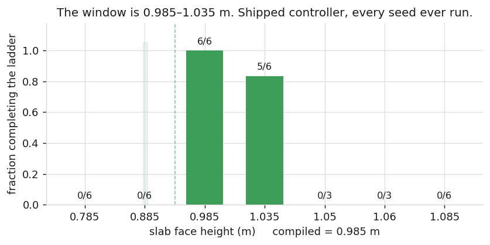
</picture>
<figcaption>Every shipped-controller seed ever run, pooled across the <code>seeded</code>,
<code>ab/off</code> and <code>edge</code> sweeps. 1.035 m completed 3/3 at a 75 s budget and 1/2 at 140 s,
so treat the upper edge as marginal even inside the window.</figcaption>
</figure>

<div class="grid3">
<figure>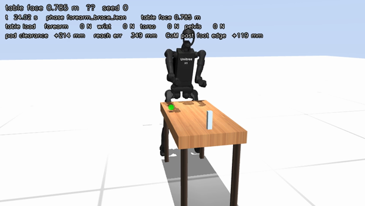<figcaption>0.785 m — bows over the slab</figcaption></figure>
<figure>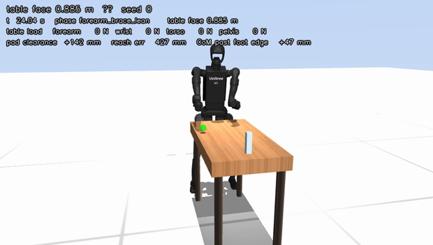<figcaption>0.885 m — falls forward</figcaption></figure>
<figure>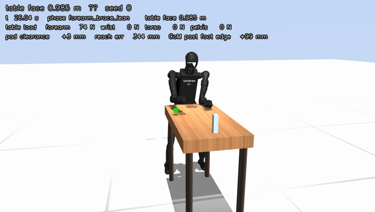<figcaption>0.985 m — <span class="ok">completes</span></figcaption></figure>
<figure>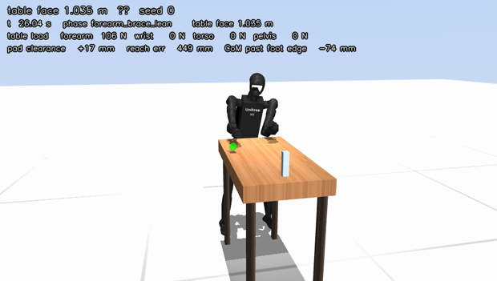<figcaption>1.035 m — <span class="ok">completes</span>, marginally</figcaption></figure>
<figure>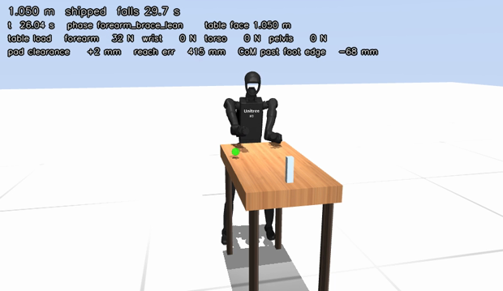<figcaption>1.050 m — seats, loads, falls</figcaption></figure>
<figure>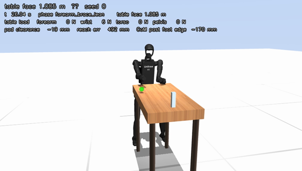<figcaption>1.085 m — never reaches the wood</figcaption></figure>
</div>
<p class="meta">Frames at t ≈ 25 s, the deepest point of the brace rung. The overlay is burned in by
<code>render_video.py</code> from the same qpos the bench logged.</p>

<h2>3. Three failure modes, not one</h2>

<figure>
<picture>
<source srcset="media/full/fig_load.dark.png" media="(prefers-color-scheme: dark)">
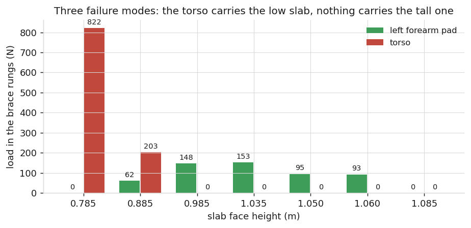
</picture>
<figcaption>Load carried during the two brace rungs. Each bar is the median across seeds of the per-run
peak. The working window is the only place where the forearm carries about 150 N and the torso carries
nothing.</figcaption>
</figure>

<div class="tw"><table>
<tr><th class="n">face</th><th class="n">completes</th><th class="n">forearm</th><th class="n">torso</th><th>what happens</th></tr>
<tr><td class="n">0.785 m</td><td class="n no">0/6</td><td class="n">0 N</td><td class="n">822 N</td><td>drapes chest-first on the slab; the table holds it up, so it does not fall, it just never advances</td></tr>
<tr><td class="n">0.885 m</td><td class="n no">0/6</td><td class="n">62 N</td><td class="n">203 N</td><td>bows past balance and falls forward</td></tr>
<tr><td class="n">0.985 m</td><td class="n ok">6/6</td><td class="n">148 N</td><td class="n">0 N</td><td>the compiled height</td></tr>
<tr><td class="n">1.035 m</td><td class="n ok">5/6</td><td class="n">153 N</td><td class="n">0 N</td><td>completes, marginally</td></tr>
<tr><td class="n">1.050 m</td><td class="n no">0/3</td><td class="n">95 N</td><td class="n">0 N</td><td>pad seats and loads to two thirds of working force; topples backward at ~29 s</td></tr>
<tr><td class="n">1.060 m</td><td class="n no">0/3</td><td class="n">93 N</td><td class="n">0 N</td><td>same</td></tr>
<tr><td class="n">1.085 m</td><td class="n no">0/6</td><td class="n">0 N</td><td class="n">0 N</td><td>the pad never gets onto the wood; nothing is carried at all</td></tr>
</table></div>

<figure>
<picture>
<source srcset="media/full/fig_traces.dark.png" media="(prefers-color-scheme: dark)">
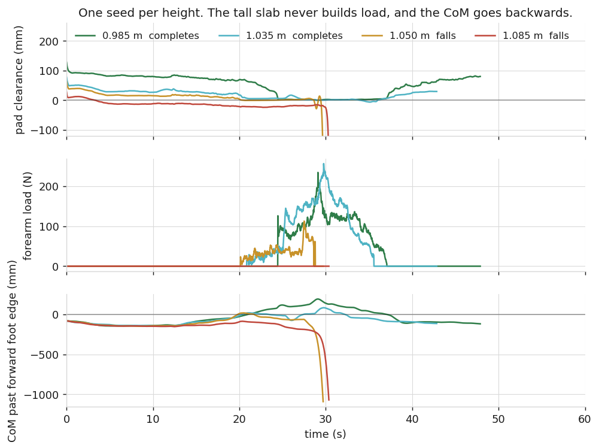
</picture>
<figcaption>One seed per height. At 1.085 m the forearm load never leaves zero and the CoM walks
backwards out from under the feet. At 1.050 m the load does build, to about half the working value, and
the run still ends the same way.</figcaption>
</figure>

<div class="grid2">
<figure><video controls preload="metadata" src="media/th/h0985_s0.mp4"></video>
<figcaption>0.985 m, shipped. Completes at 47.9 s.</figcaption></figure>
<figure><video controls preload="metadata" src="media/th/h1085_s0.mp4"></video>
<figcaption>1.085 m, shipped. The forearm hangs outboard of the wood at face height, carries nothing, and the robot sits down backwards.</figcaption></figure>
<figure><video controls preload="metadata" src="media/th/h0785_s0.mp4"></video>
<figcaption>0.785 m, shipped. The torso lands on the slab and takes 822 N; the ladder stalls to the 75 s cap.</figcaption></figure>
<figure><video controls preload="metadata" src="media/full/edge_h1050_s0.mp4"></video>
<figcaption>1.050 m, shipped. Seats the pad, builds 113 N, and topples at 29.7 s.</figcaption></figure>
</div>

<h2>4. What bounds the high end</h2>

<h3>The shoulder does not lift with the table</h3>

<figure>
<picture>
<source srcset="media/full/fig_shoulder.dark.png" media="(prefers-color-scheme: dark)">
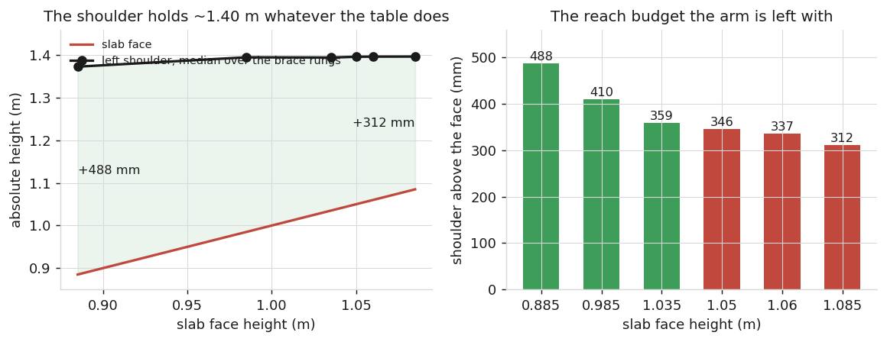
</picture>
<figcaption>Median over the brace rungs, restricted to upright frames (pelvis z &gt; 0.55 m, because a
toppling robot swings the arm through arbitrary heights). Pooled over every arm with a qpos dump —
the shoulder is pinned in all of them.</figcaption>
</figure>

<p>The left shoulder sits at about 1.40 m absolute at every slab height from 0.885 m to 1.085 m. The robot
holds one posture and lets the table come up into its working volume. The reach budget left to the arm
falls from 488 mm to 312 mm across that range, and the forearm pad's clearance above the face goes with
it.</p>

<figure>
<picture>
<source srcset="media/full/fig_clearance.dark.png" media="(prefers-color-scheme: dark)">
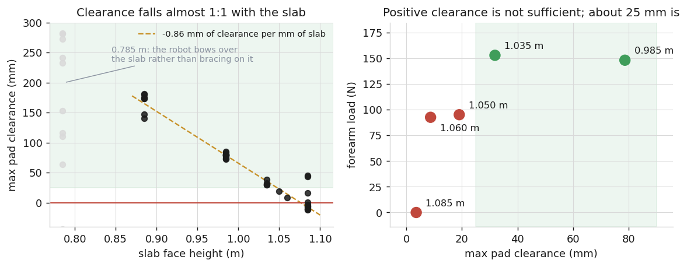
</picture>
<figcaption>Left: maximum pad clearance over the brace rungs, every run with a qpos dump.
Slope <b>−0.86 mm per mm of slab</b> — the arm recovers 14% of each millimetre the table rises.
Right: the same heights plotted as clearance against the load the brace then carries.</figcaption>
</figure>

<div class="tw"><table>
<tr><th class="n">face</th><th class="n">max pad clearance</th><th class="n">forearm load</th><th class="n">completes</th></tr>
<tr><td class="n">0.885 m</td><td class="n">+168 mm</td><td class="n">62 N</td><td class="n no">0/6</td></tr>
<tr><td class="n">0.985 m</td><td class="n">+79 mm</td><td class="n">148 N</td><td class="n ok">6/6</td></tr>
<tr><td class="n">1.035 m</td><td class="n">+32 mm</td><td class="n">153 N</td><td class="n ok">5/6</td></tr>
<tr><td class="n">1.050 m</td><td class="n">+19 mm</td><td class="n">95 N</td><td class="n no">0/3</td></tr>
<tr><td class="n">1.060 m</td><td class="n">+9 mm</td><td class="n">93 N</td><td class="n no">0/3</td></tr>
<tr><td class="n">1.085 m</td><td class="n">+4 mm</td><td class="n">0 N</td><td class="n no">0/6</td></tr>
</table></div>

<h3>The prediction this made, and how it failed</h3>

<p>Extrapolating the clearance line to zero put the upper edge at 1.076 m. Three seeds each at 1.050 m and
1.060 m tested that: <b>0/3 at both</b>, all six falling at 29–34 s. The line itself held — predicted
+19 mm and +12 mm, measured +19 mm and +9 mm. What failed is the inference that positive clearance is
sufficient. The upper edge is between <b>1.035 m and 1.050 m</b>, and the brace needs a clearance margin
of roughly 25 mm to build the ~130 N that holds it, not merely a non-negative number.</p>

<div class="grid2">
<figure><video controls preload="metadata" src="media/full/edge_h1060_s0.mp4"></video>
<figcaption>1.060 m. 9 mm of clearance, 93 N, falls at 31.6 s.</figcaption></figure>
<figure><video controls preload="metadata" src="media/th/h1035_s0.mp4"></video>
<figcaption>1.035 m. 32 mm of clearance, 153 N, completes.</figcaption></figure>
</div>

<h3>What the high end is not</h3>

<div class="tw"><table>
<tr><th>candidate</th><th>measurement</th><th>verdict</th></tr>
<tr><td>arm reach</td><td>the rung-2 waypoint solves to &lt;1 mm at every height with the pads seated and the feet planted</td><td>not a reach limit</td></tr>
<tr><td><code>Base Height</code></td><td>delivered pelvis z tracks the brace keyframe to +1…+2 mm at 1.085 m</td><td>not binding</td></tr>
<tr><td><code>com_cap_fwd</code> (0.145)</td><td>peak CoM excursion at 1.085 m is +9 mm</td><td>not binding</td></tr>
<tr><td><code>pelvis_cap_fwd</code> (0.13)</td><td>peak −47…−59 mm against the keyframe's −46 mm</td><td>not binding</td></tr>
<tr><td><code>brace_lead_x0</code> (0.24)</td><td>base x reaches 0.207 m</td><td>not binding</td></tr>
<tr><td>release pitch gate</td><td>11.4° of margin at 1.085 m</td><td>not binding</td></tr>
<tr><td><code>stance_off_x</code> (0.13)</td><td>declared in the XML, read only by <code>beginning.cc</code> and <code>stabilize.cc</code>, never by <code>lean.cc</code></td><td>dead numeric for this task</td></tr>
</table></div>

<h2>5. What bounds the low end</h2>

<p>Not the same defect with the sign reversed. At 0.885 m the pad has <b>+168 mm</b> of clearance — more
than at the compiled height, where the controller works — and still completes 0/6. Height is abundant;
balance is what runs out.</p>

<figure>
<picture>
<source srcset="media/full/fig_ladder.dark.png" media="(prefers-color-scheme: dark)">
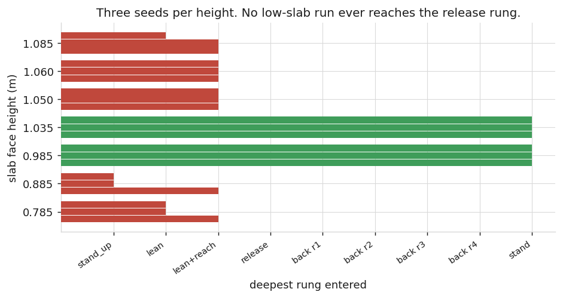
</picture>
<figcaption>No run at 0.785 m or 0.885 m ever reaches the release rung, so the
<code>standback_pitch_release</code> gate that sits on it cannot be what stops them. One 0.885 m seed
never leaves <code>stand_up</code>. This corrects the earlier write-up, which predicted a lower edge at
0.958 m from that gate; do not spend a sweep on <code>standback_pitch_release=0.70</code>.</figcaption>
</figure>

<p>The pose needed to seat both pads is genuinely more bowed at a low slab — 47.1° of base pitch at
0.785 m, 36.1° at 0.885 m, against 25.9° at the compiled height — and the robot commits to that bow
before it has support. It then either falls forward (0.885 m) or lands chest-first on the wood and stalls
(0.785 m).</p>

<h2>6. Every lever, and what each one did</h2>

<p>Ranked by the minimality rule the branch works under: an existing model numeric beats a new weight, a
weight beats a new residual, a new residual beats moving the robot. A result counts only if it widens the
window on three seeds per height at fixed thread count <em>and</em> costs no completions at 0.985 m.</p>

<figure>
<picture>
<source srcset="media/full/fig_arms.dark.png" media="(prefers-color-scheme: dark)">
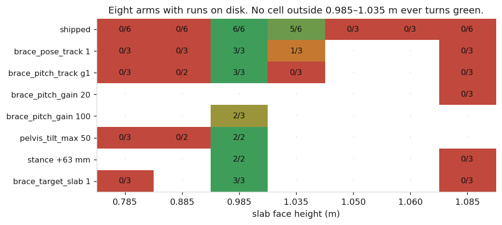
</picture>
<figcaption>The eight arms that have runs on disk. Blank cells were never run at that height.
No cell outside 0.985–1.035 m has ever completed under any arm.</figcaption>
</figure>

<div class="tw"><table>
<tr><th class="n">#</th><th>lever</th><th class="n">numbers touched</th><th>what it changed mechanically</th><th>outcome</th></tr>
<tr><td class="n">1</td><td><code>brace_com_hold</code> 0.05</td><td class="n">1</td><td>mean survival at 1.085 m 32.6 s → 47.8 s, non-overlapping sets</td><td class="no">0/3 — buys time only</td></tr>
<tr><td class="n">2</td><td><code>Brace Reach Lead</code> 400</td><td class="n">1</td><td>forward base travel followed the commanded line</td><td class="no">window unmoved</td></tr>
<tr><td class="n">3</td><td>rung-2 tolerance 0.07 → 0.20 <span class="tag">diagnostic</span></td><td class="n">1</td><td>the ladder ran end to end at 1.085 m</td><td class="mid">proves the gate is the discriminator; can never be a fix</td></tr>
<tr><td class="n">4</td><td><code>brace_pose_track</code> 1</td><td class="n">1</td><td>re-solves the brace keyframes per slab by damped least squares, seating both pads to 0.1 mm offline at every height</td><td class="no">window unmoved, <b>costs 1.035 m</b> (2/3 → 1/3, paired A/B)</td></tr>
<tr><td class="n">5</td><td><code>brace_pose_track</code> 2</td><td class="n">1</td><td>the same, with the reaching arm included</td><td class="no">0/2 at 0.885 m</td></tr>
<tr><td class="n">6</td><td><code>reach_arm_posture</code></td><td class="n">1</td><td>offline aim error 303/200/98/82/105 mm → 0–6 mm</td><td class="no">neutral; disqualified when paired with #4</td></tr>
<tr><td class="n">7</td><td><code>pelvis_tilt_max_deg</code> 50</td><td class="n">1</td><td>caps the bow</td><td class="no">3/3 at 0.985 m, 0/3 at both low heights</td></tr>
<tr><td class="n">8</td><td><code>brace_pitch_track</code> 1</td><td class="n">2</td><td>new default-off residual: replaces the pelvis-tilt dead band on the lean rungs with a signed error against the keyframe's own pitch</td><td class="no">window unmoved</td></tr>
<tr><td class="n">9</td><td><code>brace_pitch_gain</code> 20</td><td class="n">1</td><td>base pitch at 1.085 m 12.1° → 14.2°</td><td class="no">all 3 seeds fall at ~14.3 s, never reaching rung 2</td></tr>
<tr><td class="n">10</td><td><code>brace_pitch_gain</code> 100</td><td class="n">1</td><td>base pitch 12.1° → 19.8°, within 2.6° of the 17.2° the pose needs</td><td class="no">falls at ~14.1 s; <b>costs 0.985 m</b> (3/3 → 2/3)</td></tr>
<tr><td class="n">11</td><td><code>--stance_shift_x</code> 0.063 <span class="tag">bench only</span></td><td class="n">1</td><td>the feet land at −0.199…−0.203 m from the near edge, where all three brace keyframes assume them</td><td class="no">the pad did not move; 0/3 at 1.085 m</td></tr>
<tr><td class="n">12</td><td><code>brace_target_slab</code> 1</td><td class="n">1</td><td>the brace aim moves from 30 mm in front of the near edge to 50 mm onto the slab</td><td class="no">0/3 at 1.085 m and 0.785 m; <span class="ok">3/3 at 0.985 m</span></td></tr>
</table></div>

<div class="grid2">
<figure><video controls preload="metadata" src="media/full/pitchg100_h1085_s0.mp4"></video>
<figcaption>#10, <code>brace_pitch_gain</code> 100 at 1.085 m. The bow is now within 2.6° of what the pose needs, and the robot commits to it before the pad is over the slab. Falls at 14.1 s.</figcaption></figure>
<figure><video controls preload="metadata" src="media/pose/on_h1085_s0.mp4"></video>
<figcaption>#4, <code>brace_pose_track</code> 1 at 1.085 m. The keyframes were re-solved to seat both pads to 0.1 mm offline; in the run nothing changes.</figcaption></figure>
</div>

<h3>Why re-solving the keyframes cannot work on its own</h3>

<p>The retarget's largest component lives in the floating base, and a posture cost cannot command a
floating base.</p>

<pre><code> face | retarget delta:  base_x   base_z   pitch | joint |dq| max/rms | pads with the base PINNED
 0.785 |                 -0.052  -0.047  +21.3° | 0.494 / 0.149   | forearm +204.6 mm  wrist +275.3 mm
 0.885 |                 -0.025  -0.027  +10.2° | 0.270 / 0.080   | forearm  +98.8 mm  wrist +137.2 mm
 0.985 |                 +0.000  +0.000   +0.0° | 0.000 / 0.000   | forearm   +2.1 mm  wrist   +9.4 mm
 1.035 |                 +0.001  +0.011   -4.6° | 0.139 / 0.043   | forearm  -38.9 mm  wrist  -45.8 mm
 1.085 |                 -0.005  +0.018   -8.7° | 0.302 / 0.086   | forearm  -75.0 mm  wrist  -94.3 mm</code></pre>

<p>Reapplying only the joint half leaves the pad 75 mm below the face at 1.085 m and 205 mm above it at
0.785 m. Base pitch also has no gradient on the lean rungs in the shipped controller: <code>Pelvis
Tilt</code> is a one-sided dead band that is free from 0–60° whenever an arm is in contact, <code>Torso
Forward Tilt</code> is yaw-only, and <code>Brace Erect</code> is gated to the release rung with weight 0
on the lean rungs. That is what <code>brace_pitch_track</code> (#8–#10) was built to supply, and the
gains that bite make the robot bow before it has support.</p>

<hr>

<h2>7. The three directives, answered</h2>

<div class="q">"I'd assume modifying the brace keyframes would help for a different table height. Shouldn't be
completely tough but not sure. Changing the distance between table and robot should also help. Maybe
there is some ratio between them that'd work in a window."</div>

<h3>a. Modifying the brace keyframes — done, as an IK re-solve; not done, as a hand-authored height offset</h3>

<p>This is lever #4/#5, <code>brace_pose_track</code>. It re-solves all three brace keyframes for the
actual slab by damped least squares, holding both feet where the keyframe holds them, and it seats both
pads to 0.1 mm offline at every height from 0.785 m to 1.085 m. In the runs it changes nothing at the
high end and it costs a completion at 1.035 m.</p>

<p>The reason is in the table above: at 1.085 m the re-solve asks the base for <b>+18 mm of z and
−8.7° of pitch</b> and takes the rest out of the arm. The measurement in §4 says the shoulder is short by
about 90 mm. So the keyframe edit that has been tested is the one that <em>minimises</em> the change to
the authored pose, and it does not ask for enough height. The keyframe edit that has <b>not</b> been
tested is a deliberate height offset — command the brace keyframe's base z upward as a function of
<code>(face − 0.985)</code>, rather than accepting the +18 mm the IK is content with. That is the
top-ranked open item in §8.</p>

<h3>b. Changing the distance — tested at one point, at the end where it cannot help</h3>

<p><code>--stance_shift_x 0.063</code> is a bench-only flag that translates the whole robot 63 mm toward
the table at reset. 63 mm is not arbitrary: it closes a real defect. The <code>home</code> keyframe puts
the feet 260 mm back from the near edge and all three brace keyframes assume 197 mm, and every rung pins
both feet at weight 2000, so the ladder can never close the gap by stepping.</p>

<figure>
<picture>
<source srcset="media/full/fig_stance.dark.png" media="(prefers-color-scheme: dark)">
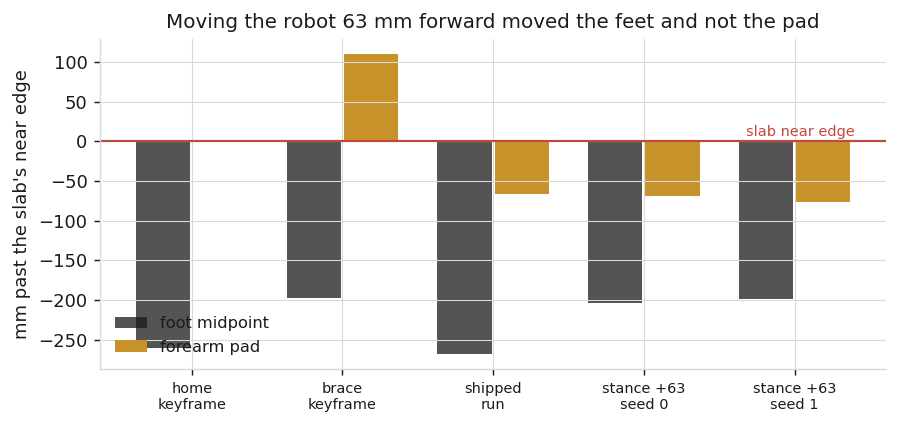
</picture>
<figcaption>At 1.085 m. The feet moved exactly as commanded, from −268 mm to −199…−203 mm. The pad stayed
where it was, at −66…−77 mm, and 13–19 mm below the face.</figcaption>
</figure>

<figure><video controls preload="metadata" src="media/full/stance63_h1085_s0.mp4"></video>
<figcaption>1.085 m with the stance closed by 63 mm. 0/3, and no seed reached rung 2 — worse than shipped,
which reached it in 2 of 3. The 0.985 m control held at 2/2.</figcaption></figure>

<p>The related aim experiment is #12. The shipped <code>Brace Pos</code> target is
<code>torso_x + 0.4·(table_centre_x − torso_x)</code>, a blend of the torso and the table, so it tracks
the body rather than the slab and walks off the front of the wood as the robot leans further back at a
tall table.</p>

<figure>
<picture>
<source srcset="media/full/fig_aim.dark.png" media="(prefers-color-scheme: dark)">
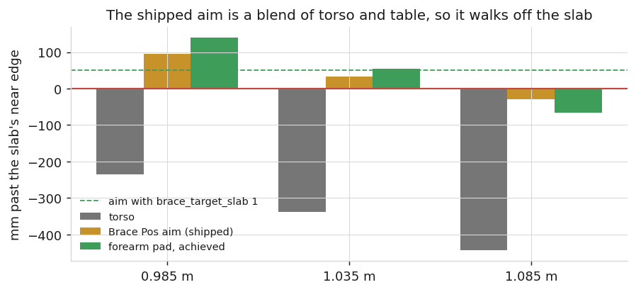
</picture>
<figcaption>Medians over the brace rungs, mm past the slab's near edge. At 1.085 m the shipped aim sits
30 mm in <em>front</em> of the near edge — off the wood entirely — and 44 mm above the face, so the
gradient pulls the pad into the slab's front face. <code>brace_target_slab</code> 1 moves it to 50 mm
onto the slab.</figcaption>
</figure>

<p>Moving the aim 80 mm bought 27 mm of pad advance and no change in clearance; the wood is in the way.
It is free at the compiled height (3/3, marginally faster) and it takes rung-2 entry at 1.085 m from 1 of
3 seeds to 3 of 3, so it is worth proposing upstream on its own merits. It does not widen the
window.</p>

<div class="grid2">
<figure><video controls preload="metadata" src="media/full/bracetgt_h1085_s0.mp4"></video>
<figcaption><code>brace_target_slab</code> at 1.085 m: reaches rung 2 and survives to 42.2 s, then falls.</figcaption></figure>
<figure><video controls preload="metadata" src="media/full/bracetgt_h0785_s0.mp4"></video>
<figcaption><code>brace_target_slab</code> at 0.785 m: worse than shipped. Two of three seeds now fall where all three shipped seeds stalled.</figcaption></figure>
</div>

<h3>c. The ratio — it exists, it is a balance ratio, and it has never been swept</h3>

<p>This is the part of the hypothesis that had not been tested at all, so it was computed:
<code>probe_standoff.py</code> re-solves the brace pose over a grid of slab heights and base offsets in
±120 mm, with both pads seated on the slab at the offsets the shipped keyframe uses and the feet pinned
where the shifted base puts them. Pure kinematics, no sim time.</p>

<figure>
<picture>
<source srcset="media/full/fig_standoff.dark.png" media="(prefers-color-scheme: dark)">
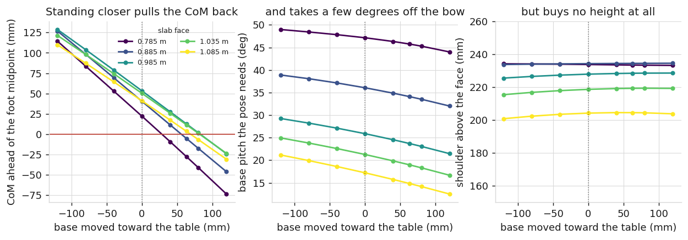
</picture>
<figcaption>The IK residual is below 0.2 mm in all 40 cells, so reachability is nowhere the constraint.
Standing closer moves the CoM back over the feet at −0.65 mm per mm, and takes 2–5° off the bow the pose
needs. It changes the shoulder's height above the face by under 4 mm at any slab.</figcaption>
</figure>

<p>So there is a ratio, and it acts on balance rather than on reach. Two consequences:</p>

<ul>
<li><b>At the high end it cannot help</b>, which is what the sim test found independently. The deficit at
1.085 m is 90 mm of vertical shoulder height and standoff supplies none of it.</li>
<li><b>At the low end it has never been run.</b> The 0.785 m and 0.885 m failures are a forward loss of
balance, and standing 120 mm closer takes the required bow from 47.1° to 44.0° at 0.785 m and moves the
CoM 78 mm back relative to the foot midpoint. That is the right direction and a plausible magnitude, and
the only stance runs on disk are at 1.085 m and 0.985 m. This is the gap in the study.</li>
</ul>

<h2>8. What is still open</h2>

<p>Ranked. Each names the measurement that settles it.</p>

<ol>
<li><b>Command the shoulder height at the tall slab.</b> The only candidate whose axis matches §4.
<code>Base Height</code> is a live residual whose delivered value tracks its command to 2 mm, so the
command is what is wrong. Add a numeric <code>brace_base_z_gain</code> scaling <code>(face − 0.985)</code>
into the brace keyframe's base z, under the <code>brace_pose_track</code> machinery that already writes
<code>model-&gt;key_qpos</code>. One numeric, default 0 = byte-identical.
<b>Confirmed</b> if 1.085 m max pad clearance goes positive and rung-2 forearm load leaves zero;
<b>killed</b> if 0.985 m loses a completion, or if the shoulder rises and the pad does not follow —
which would mean the arm posture, not the base, is holding it. Roughly 9 runs, ~50 min.</li>

<li><b>Sweep the standoff at the low end.</b> Directly from §7c, and the one directive from the coauthor
that has no data. <code>--stance_shift_x</code> at +0.06 and +0.12 against shipped, three seeds each at
0.785 m and 0.885 m. <b>Confirmed</b> if either low height completes; <b>killed</b> if the drape at
0.785 m survives the shift, which would mean the bow is commanded rather than forced. 12 runs, ~70 min.</li>

<li><b>Locate the upper edge to 5 mm.</b> Three seeds each at 1.040 m and 1.045 m. With the clearance and
force numbers already tabulated this says whether completion tracks a clearance threshold (~25 mm) or a
force threshold (~130 N), which decides how much height item 1 has to buy. 6 runs, ~35 min.</li>

<li><b>The 0.905–0.935 m band has never been run under any arm.</b> Three seeds at each bounds the lower
edge to 50 mm and tests whether §5's balance story predicts it. 6 runs, ~35 min.</li>

<li><b>A stepping rung.</b> <code>Foot Left Up</code>/<code>Foot Right Up</code> at weight 2000 on all
nine rungs is what makes the 63 mm keyframe disagreement structural. Dropping the weight on rung 1 only,
with <code>Right Foot Lift</code> re-enabled, is a two-number change to the strategy JSON and needs no
rebuild. Low priority: §7b shows stance does not bound the window, so this fixes a real defect that is
not the one in the way.</li>
</ol>

<p>Not planned: <code>brace_erect_target</code> and the remaining brace-geometry constants fitted at
0.985 m. §4 says the pad is not near the slab at 1.085 m, so a term that shapes contact once seated
cannot fire.</p>

<h2>9. Defects found along the way</h2>

<ul>
<li><code>brace_force</code> in <code>lean::ComputeMetrics</code> reads <code>right_contact[0]</code>
while the model braces with <code>left_forearm_pad</code>/<code>left_wrist_pad</code>. It reported 0.00 N
through a brace in which the left forearm carried 97–168 N. Affects the metric and the deploy monitor,
not the controller. Not yet sent to Allen.</li>
<li><code>reach_err</code> and <code>reach_tgt_*</code> are gated on
<code>kf.name == "reach_to_target"</code>, a rung name strategy 25 never uses, so the whole family is nan
for any braced ladder. Same status.</li>
<li><code>brace_press_depth</code> ships at −0.044 under <code>brace_target_face</code> 1, putting the
press target 44 mm <em>above</em> the face, not the 60 mm below that <code>lean.cc</code>'s own comments
describe. The z half of that defect is repaired on this branch; the x half was
<code>brace_target_slab</code>, tested as #12.</li>
<li><code>stance_off_x</code> and <code>lean_nominal_x</code> are declared in
<code>Lean_H12_Magpie.xml</code> and never read by <code>lean.cc</code>.</li>
<li>The 2026-09-06 page quoted the forearm load at 1.085 m as "0–3 N". Recomputed here over all six
shipped seeds with one definition, four carry exactly 0 N and two brush the slab at 21 N and 32 N. The
median is 0 N; the range is 0–32 N.</li>
</ul>

<h2>10. Reproducing this</h2>

<pre><code>cd mujoco_mpc
ninja -C build_cmake -j4 lean_bench
S=studies/table_height

# one run
build_cmake/bin/lean_bench --task "Lean H12 Magpie" --strategy 25 \
  --table_h 1.085 --seed 0 --total_time 75 --threads 6 --spp 3 \
  --out r.csv --qpos_out r.qpos.csv

# every figure on this page, from the committed run CSVs (no sim time)
$S/make_report_figs.py

# the standoff grid of section 7c (no sim time)
$S/probe_standoff.py --json $S/figs/standoff.json

# the arms of section 6.  SWEEP_MEM_MAX matters: lean_bench needs ~9.9 GB at
# these settings and the 6G default silently pages the difference to swap.
$S/sweep_ab.py       --out $S/runs/ab        # pose_track off vs on, one binary
$S/sweep_pitch.py    --out $S/runs/pitch     # brace_pitch_track, gain ladder
SWEEP_MEM_MAX=11G $S/sweep_stance.py   --out $S/runs/stance
SWEEP_MEM_MAX=11G $S/sweep_bracetgt.py --out $S/runs/bracetgt</code></pre>

<p><code>lean_bench</code> takes <code>--numeric &lt;name&gt;=&lt;value&gt;</code> for any numeric that
already exists in the model, plus <code>--pose_track</code> and <code>--stance_shift_x</code>. Every arm
above was run from one binary, which is what makes the comparisons paired. Raw runs under
<code>studies/table_height/runs/</code> are gitignored and regenerable; the figures and the videos on this
page are committed under <code>docs/lean/media/</code>.</p>

<p class="note">Run policy, not optional. MJPC is CPU-bound and a parallel sweep has hard-frozen this
workstation twice. Serial, <code>--threads 6</code>, under <code>systemd-run --user --scope -p
CPUQuota=700% -p MemoryMax=11G</code>; <code>sweep.py</code> enforces it and refuses to start if the
1-minute load is already above <code>nproc/2</code>. Budget 4–10 min per run.</p>

<p class="meta" style="margin-top:34px">Local file:
<code>mujoco_mpc/docs/lean/20260908-table_height_full_report.html</code> ·
prior pages and their scripts are indexed in <code>docs/experiments/INDEX.md</code> ·
branch <code>wxie/table-height</code>, nothing pushed.</p>

</main>
